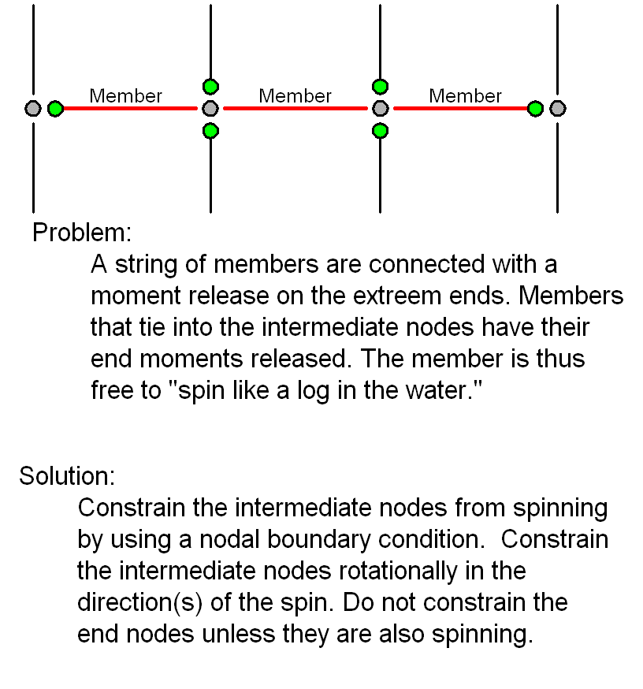
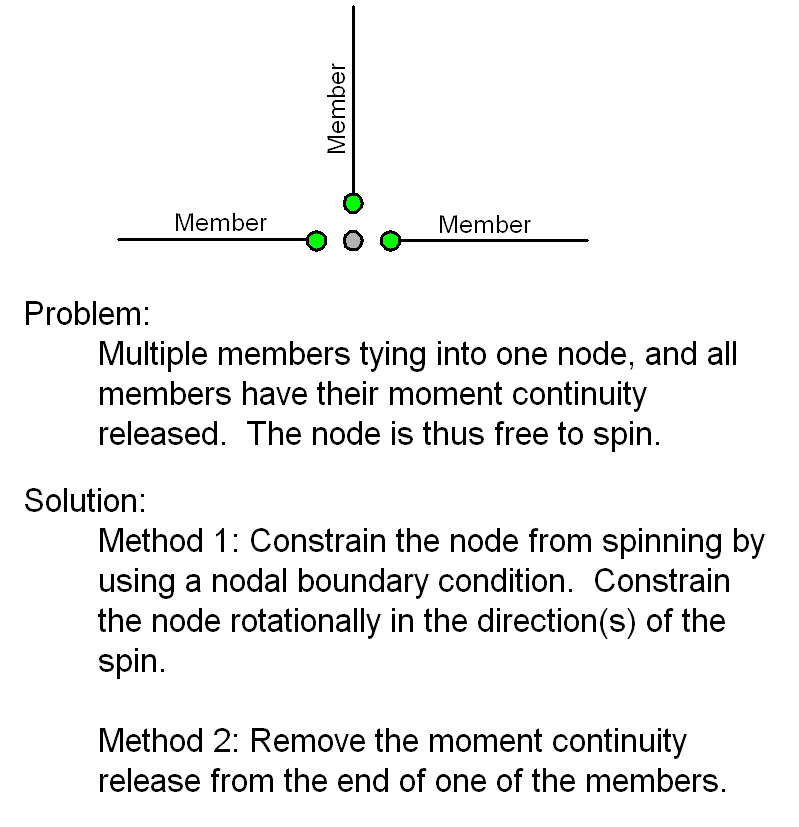
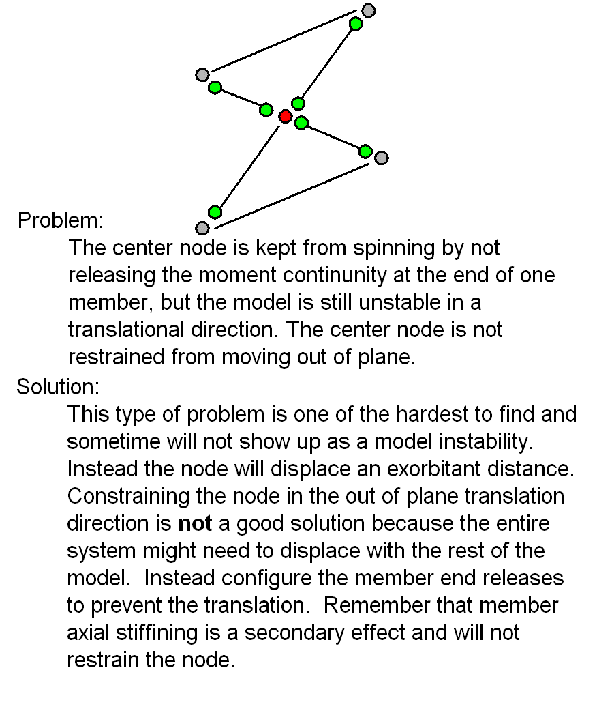

Finite Element Processor Error and Warning Messages
During the finite element analysis process, the program my find that your model is not stable. If the instability is in a translation direction, the analysis will not continue and you will need to fix the problem. Rotational instabilities are automatically constrained, warning messages are issued, and the analysis proceeds. In ether case, you need investigate why the model is unstable and fix the problem.
The major reason for model instability is that members connecting into a node do not supply sufficient restraint to prevent that node from moving. The motion can be either translation or rotational. The solution is to either change the connecting member end releases to constrain the node’s motion, or apply a boundary condition directly to the node.
Care must be taken when applying a boundary condition to a node. Consider whether the constraint will have an adverse effect on surrounding members. For example, if a node is the connecting point for members that have their end moment continuity released, then that node may be restrained from rotation. This is because the node’s rotation is not tied into any of the connecting members and constraining it will not force a member end to not rotate. Think of it this way, if you “grab hold of a node” and then rotate it in any of the three major axes would any part of the model resist this motion. If not, then that node is a good candidate for a local rotational constraint. Except for natural boundary conditions at points of support, a translation constraint is hardly ever used.
Consider the following examples of unstable models.
  